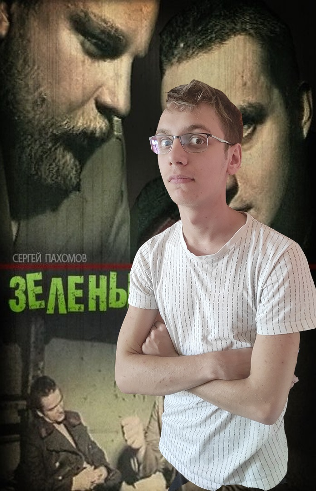
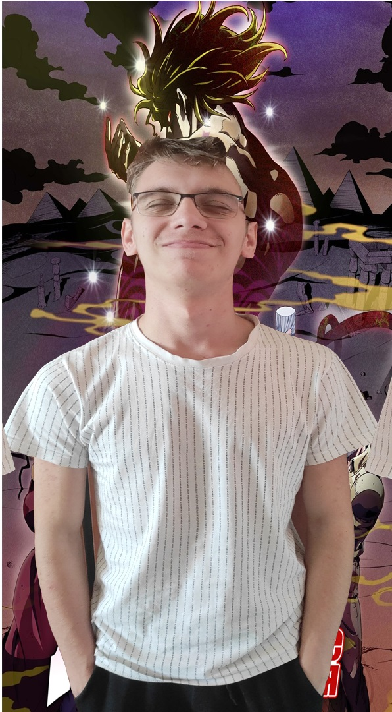
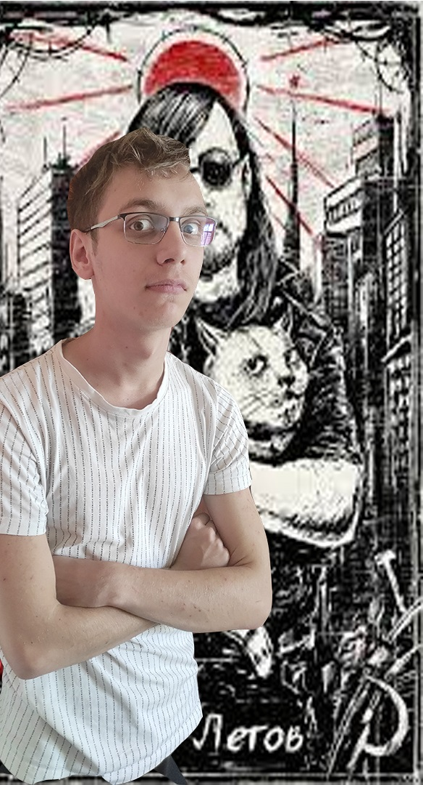

„Уже слово «христианство» есть недоразумение, — в сущности был только один христианин, и он умер на кресте.“
Мистецтво це міст між смертним та вічним. Саме воно дарує нам це хибне відчуття безсмертя. З кожним переглядом таких кінофільмов: "Зелений слонік", "Джожо", "Збірник пісень Егора Летова" ви можливо цікавились хто надав нам змогу стати свідком неземного.
Артуріо - юнак родом з невеличкого містечка Борзна. Місце відоме тим що там відбулося багатьох зустрічей Пантелеймона Куліша й Тараса Шевченка. Ще тоді кам'яними цеглинами вибудовувався незламний образ Борзнянського краю. Навчався Артур Мазератті в гімназії. Гімназійни часи були теплими, але на душі відчувався холод. Кожен день як багато хто із нас Артуру Мазератті приходилось переживати вічність, що тривала 8 годин. Цей катарсис й став ескізом Зеленого слоніка. Творчий шлях після цього помчався зі швидкістю світу й дарував нам такі витвори.
Звідки Артур Мазератті Баребухович взяв своє наіменування? Все просто, від Бога
|  |  |  |
| Зелений слоник | JoJo Adventure | Збірник Пісень Егора Летова |
| Назва фільму та Рік | Опис та оцінка Metacritic | |||
|---|---|---|---|---|
| Назва | Рік | Опис | Оцінка користувачів | Оцінка критиків |
| Jojo Rabbit | 2019 | Світогляд самотнього німецького хлопчика перевертається з ніг на голову, коли він виявляє, що його мати-одиначка ховає молоду єврейську дівчину на горищі. | 58 | 7.8 |
| Cuphead Show | 2022 | Мультсеріал, заснований на відеогрі Cuphead, розповідає про пригоди Капхеда та його брата Магмена. | 69 | 7.3 |
| BoJack Horseman | 2014 | Анімаційна комедія про боротьбу колишньої зірки ситкому (Вілл Арнетт), який живе в Лос-Анджелесі, виявляється напівконем-напівлюдиною. | 59 | 8.6 |
| Mike Judge's Beavis and Butt-Head | 2022 | Серіал розповідає про однойменних Бівіса і Баттхеда пару підлітків-ледарів, що відрізняються апатією, розумовою відсталістю і низькопробним гумором. | 81 | 6.0 |
| Зелений слоник | 1999 | Сюжет Дія фільму відбувається приблизно в 1986 році на гауптвахті, куди за провини потрапляють два молодші офіцери. | 95 | 8.0 |
| JoJo's Bizarre Adventure | 1992-2003 | Британський аристократ XIX століття Джонатан Джостар - протистоїть Діо Брандо, який планує обманом позбавити героя спадщини. У гонитві за багатством і могутністю Діо звертається до вампіра і знаходить безсмертя за допомогою стародавнього артефакту | 91 | 9.5 |